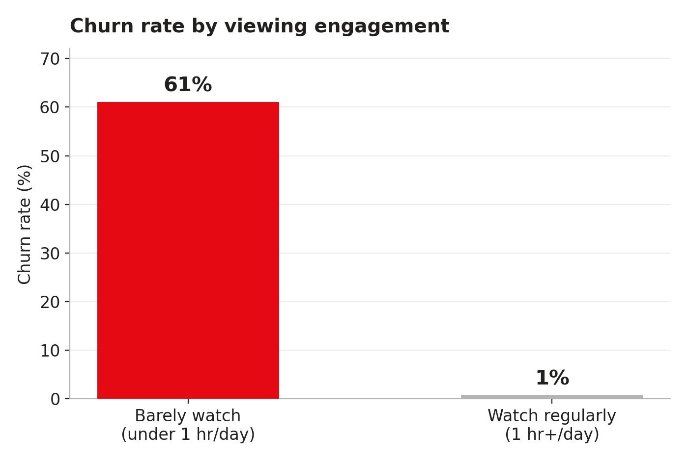
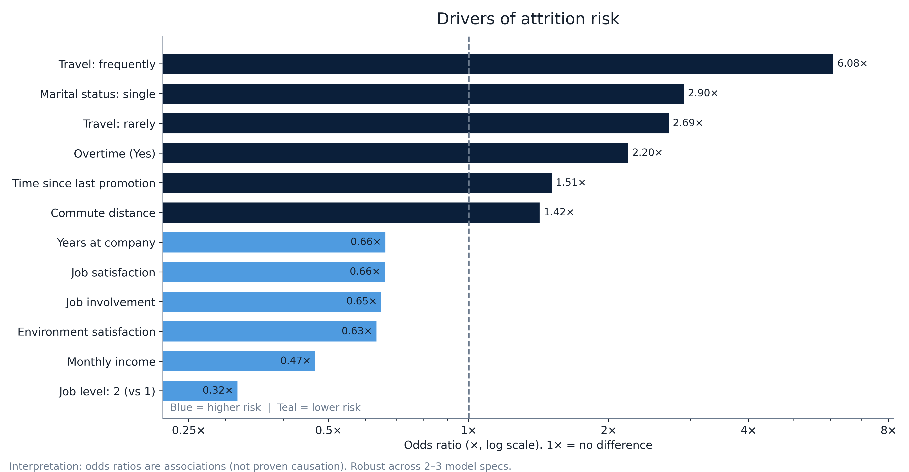
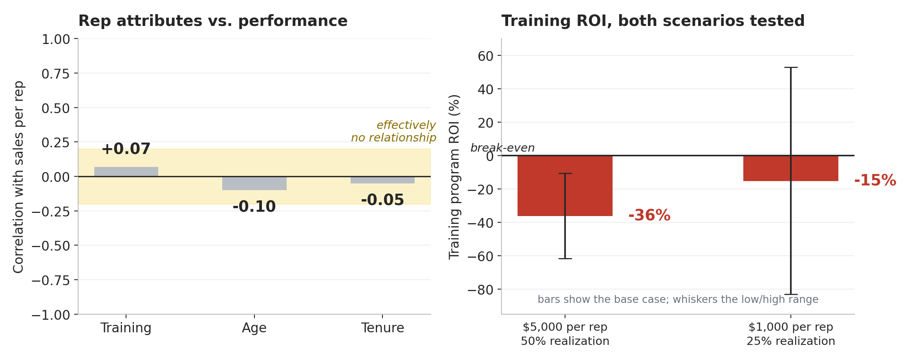
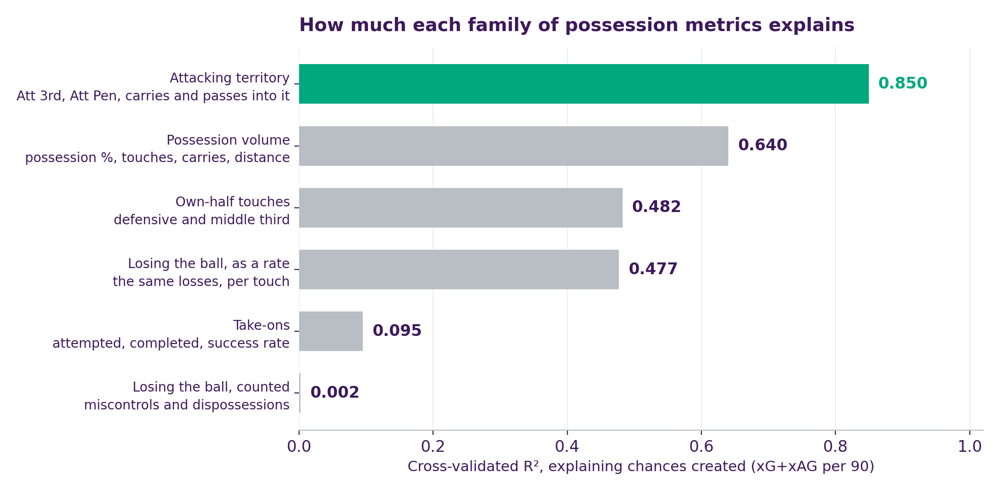
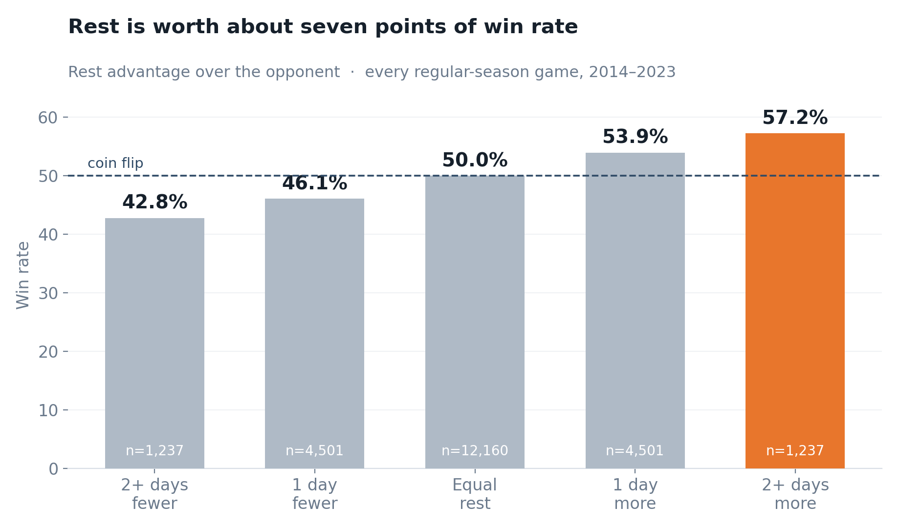
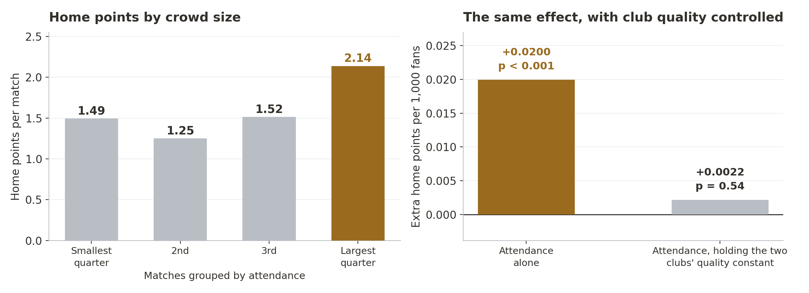

A brand's full order and inventory history · Python · Shopify export · data integrity
A growth and inventory diagnostic for a US sportswear brand. Most of the time didn't go on the analysis — it went on finding nine ways the raw export was lying, and each one of them had already produced a confident wrong answer.
Where it could be wrong
I can't show the numbers on this one, so you're taking the method on trust. That's fair to be sceptical about.
How it was done
A product renamed mid-life meant joining on name lost 98% of the volume. Three separate fan-out joins inflated figures by up to 5x. Placeholder customer IDs invented a repeat buyer who didn't exist. Most of the inventory table was filler, which made the store look like it held decades of stock. I catalogued all nine, banned six tables from being summed, and wrote a guard script so they couldn't come back. The final audit recomputes 57 checks from source rather than from any intermediate file. The brand's own B2B flag was unusable — it read False for every order — so the two business lines got separated on geographic signature instead and validated three ways.
Client work — figures and identifying details withheld.
I expected price and plan tier to do most of the work. They barely register. How much someone watches separates leavers from stayers so cleanly that if you take viewing behaviour out, three different models collapse to near guesswork.

Subscribers who barely watch churn at 61%. Regular watchers, 1%. Nothing else in the dataset comes close to separating them like this.
Where it could be wrong
One feature carrying everything is usually a warning rather than a win. It's worth asking whether engagement predicts churn or just measures it — someone who has already decided to leave probably stops watching first. I'd want a time-lagged version before anyone spent money on it.
How it was done
Logistic regression, random forest and XGBoost, compared with and without the engagement block. The retention play that comes out of it targets disengaged Basic-plan subscribers, because that's where spend has somewhere to go.
Attrition concentrates much harder than I'd assumed — two employee groups account for roughly a third of all departures. Business travel, overtime and how long since someone was promoted carry most of the signal that survives controls.

Odds of leaving, against the company baseline. Frequent travel roughly doubles it; the factors below the line are the ones that hold someone.
Where it could be wrong
My first costing said the retention programme returned 13x. That number came from an industry benchmark rather than this company's actual headcount, and once I re-costed it per employee and per role it came out at $83K. The benchmark version would have been the better-looking slide.
How it was done
Regularised logistic regression, then the risk scores turned into a 156-employee pilot that covers 35% of predicted departures — small enough to fund, large enough to measure.
$25.7M in sales · ~45 reps · 10,889 transactions · Power BI · DAX · What-if parameters
Training looks like the answer in a decomposition tree, so I built the case for funding it. Tested directly, rep attributes correlate near zero with sales per rep. What actually separates reps is which manager they report to.

Training, age and tenure against sales per rep: all three sit on top of zero. The supervisor gap is $134K.
Where it could be wrong
Supervisor assignment isn't random, so that $134K has territory and account quality baked into it. It tells you where to look. It doesn't prove managers cause the difference, and I'd want to see the territories before spending anything on it.
How it was done
Three dashboards, from a descriptive baseline to a direct test of each rep attribute. Both costings of the training programme come back negative, at −36% and −15%, and a COVID toggle keeps 2020 from dragging the forecast baseline down and inflating any uplift measured against it.
200+ athletes · 5+ sources and APIs · R · Python · R Shiny · Streamlit · ETL
[Simon — this is the ESM slot you asked for. You said this is the work you're actually proud of, because it got used. Tell me what you can say about it: what the team couldn't do before, what you built, what changed after. No athlete data and no client identifiers — I'll write it as a case study from whatever you're comfortable sharing.]
Employer work — case study, no athlete data or client identifiers.
Most of these have a repository with the code, the data where it can be
shared, and a longer write-up. More at github.com/Semin1c.
Sports Analytics
Questions about how the game actually works
Possession, home advantage, competitive balance, the calendar — and the tracking groundwork that has to exist before any of it is possible.
Three affiliated junior programmes · Event design · stakeholder work · hockey
Three programmes, no shared standard for what gets recorded during a game. I'm building that framework with the GMs and coaches rather than handing them a schema and hoping.
Where it could be wrong
A collection standard nobody follows is worth nothing, so most of this is conversations rather than analysis. It's also unfinished, which is why there's nothing to show yet.
How it was done
The goal is a foundation for analysis that recurs — agreeing which events matter, who records them and in what form, so next season's data is comparable to this one. Most analytics problems at this level aren't modelling problems. They're the absence of anything consistent to model.
I tested 23 possession metrics across eight Premier League seasons. On clubs the model had never seen, touches in the opposition box on their own did better than all 23 together.

One variable against the full metric set, scored out of sample. Most of what we measure about possession is describing the same thing several times over.
Where it could be wrong
This says box touches predict chances, which is close to saying a thing predicts itself — they're both measuring territory. It argues for a simpler KPI, not for a new insight about football.
How it was done
Comparing 168 transfers against same-position benchmarks, final-third involvement held up across clubs better than xG+xAG output did, which is the part that would matter for recruitment.
23,636 games · 300 team-seasons · R · logistic GLM · k-means · geospatial
People talk about the NBA schedule as one thing — the grind, the road trip, the back-to-back in a third city in four nights. Split it into rest and travel and only one of them is real. A team with two more days off wins 57% of the time. Miles flown predicts essentially nothing.

Win rate by rest advantage, every regular-season game 2014–2023. Monotonic across every step, and decided before anyone takes a shot.
Where it could be wrong
I had the travel finding backwards in my own write-up for months. The summary called travel load a significant predictor of the home-away gap; recomputed, it's p = 0.76 with an R² of 0.0005, and the coefficient points the wrong way. The chart underneath had been right the whole time.
How it was done
Seven modules — schedule density, travel load, fatigue against defence and offence, opponent sequencing, a win-impact GLM, and k-means that sorts all 300 team-seasons into five schedule archetypes. Added up, the whole schedule separates the luckiest and unluckiest franchise by about 1.7 wins across five seasons, which is an order of magnitude below team quality.
A full season, every match · Python · permutation testing · xG
Not the crowd, and not the referee. Attendance predicts home points right up until you account for which clubs fill big stadiums, and then it's nothing. The referee spread sits inside what random shuffling produces. What's left is territorial — home sides create more, they don't finish better.

Attendance against home points, before and after holding club quality constant. The relationship is the clubs, not the crowd.
Where it could be wrong
One season, one league. Home sides create 1.484 expected goals to 1.121 at an identical conversion rate, which is a clean result — but 380 matches is not a lot to rule two explanations out on, and I'd want several seasons before saying it with confidence.
How it was done
A data-quality pass came first and caught a broken column: the field meant to record who scored first never names the home team, in any of the 380 matches. Anything built on it would have been wrong.
Basically every football fan will tell you MLS isn't as competitive as Europe. It depends completely on what you mean by competitive. I measured it as how far apart the teams finish, and on that MLS is the tightest of the six — while Bayern took 11 of 14 Bundesliga titles over the same stretch.
How evenly matched is each league?
Spread of points per match within a season, averaged 2010–2023. Lower means closer.
MLS
0.315
Ligue 1
0.415
Bundesliga
0.449
La Liga
0.464
Premier League
0.473
Serie A
0.476
Points per match, because MLS and the Bundesliga play 34 games while the rest play 38. Over the same period Bayern won 11 of 14 Bundesliga titles.
Where it could be wrong
My first classifier hit 88–90% accuracy and I was pleased with it. 86% of the team-seasons are European, so a model that answers "European" every time scores about the same, and mine was identifying fewer than half the MLS seasons — the ones the question was actually about. Weighting the classes and scoring on AUC and MLS recall takes it to 92% at 0.954 AUC.
How it was done
MLS is also built differently: a draft, a lottery, and a title decided in the playoffs rather than over the table. A club already safe in the playoff places has little reason to chase one more league position, and a club out of them has a reason to lose. That compresses a table without the football being more even. The measurement holds up under held-out clubs and held-out seasons; what causes it needs more work.
200+ athletes · 5+ sources and APIs · R · Python · R Shiny · Streamlit · athlete monitoring
[Simon — this is the ESM slot you asked for. You said this is the work you're actually proud of, because it got used. Tell me what you can say about it: what the team couldn't do before, what you built, what changed after. No athlete data and no client identifiers — I'll write it as a case study from whatever you're comfortable sharing.]
Employer work — case study, no athlete data or client identifiers.
Most of these have a repository with the code, the data where it can be
shared, and a longer write-up. More at github.com/Semin1c.
Get in touch
Open to analyst roles from May 2026. Email is the quickest way to reach me.